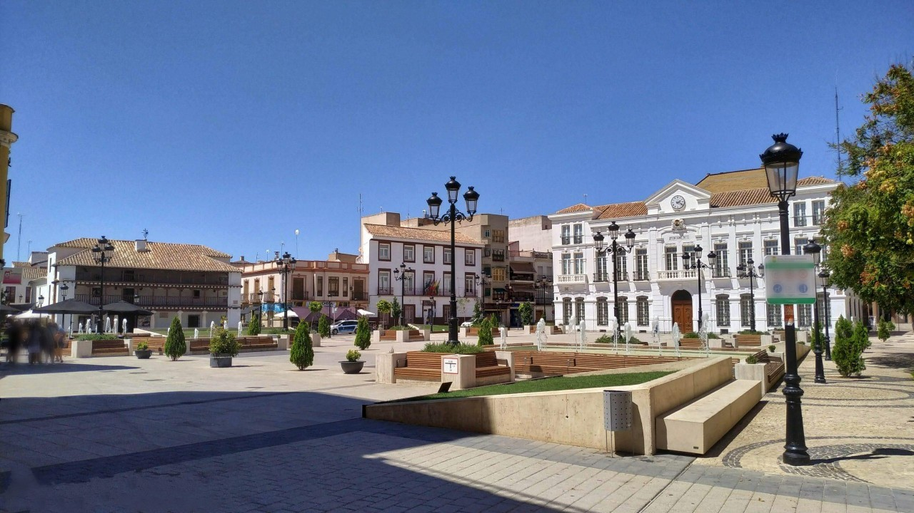

Tomelloso es una ciudad y municipio español situado en el noreste de la provincia de Ciudad Real, en la comunidad autónoma de Castilla-La Mancha. Se ubica en el centro geográfico de la región natural de La Mancha y se trata del municipio con mayor población de la comarca y el octavo de Castilla-La Mancha.

Niort, Bir Lelhu, Lepe, Ibi
36 024 habitantes en 2022
Ultimo domingo de Abril en honos a la Virgen de las Viñas